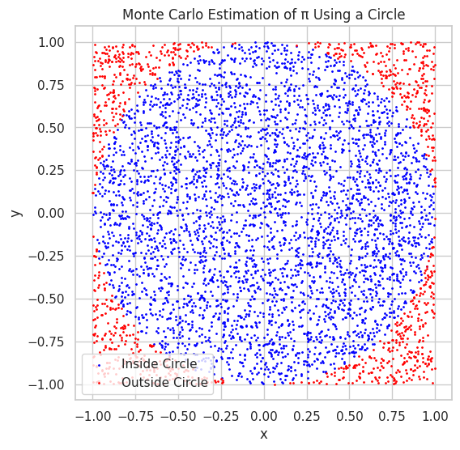
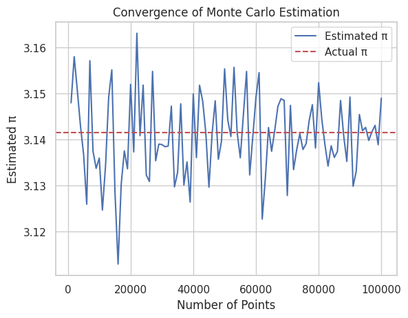
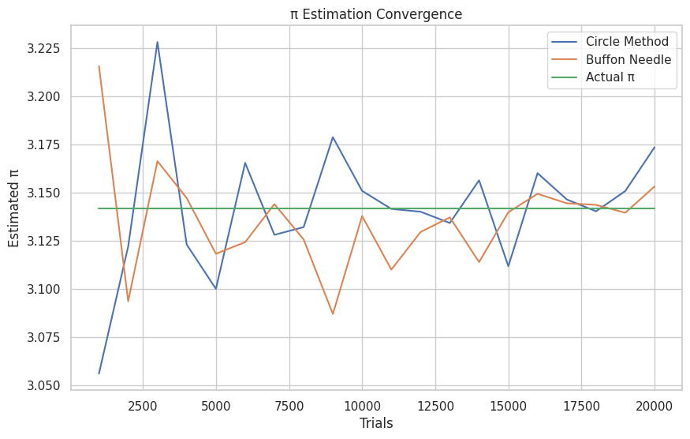

Problem 2
Estimating Pi Using Monte Carlo Methods
Motivation
Monte Carlo simulations use randomness to solve problems that might be deterministic in principle. One fascinating application is estimating the value of π (pi) — a fundamental mathematical constant — through geometric probability.
This approach is powerful because: - It visually demonstrates probabilistic thinking. - It connects concepts from geometry, statistics, and computation. - It highlights convergence and randomness in numerical simulations.
Part 1: Estimating π Using a Circle (Geometric Probability)
Theoretical Foundation
Imagine a unit circle (radius = 1) inscribed in a square of side length 2. The area of the square is \(( 4 )\) and the area of the circle is \(( \pi )\). If we randomly throw darts at the square, the probability that a dart lands inside the circle is:
Hence, we can estimate π as:
Simulation in Python
Estimate of π with 100 points: 3.080000
Estimate of π with 1000 points: 3.072000
Estimate of π with 10000 points: 3.157200
Estimate of π with 100000 points: 3.135560
Visualization

Convergence Analysis

Part 2: Estimating π Using Buffon’s Needle
Theoretical Foundation
Buffon's Needle is a probability experiment where a needle of length \(( l )\) is dropped onto a floor with parallel lines spaced distance \(( d )\) apart. If \(( l \leq d )\), then the probability that the needle crosses a line is:
Rearranging gives the estimation of π:
Simulation in Python
Estimate of π with 100 throws: 3.571429
Estimate of π with 1000 throws: 3.144654
Estimate of π with 5000 throws: 3.184713
Estimate of π with 10000 throws: 3.133323
Advanced Visualization (Optional Concept)
Due to complexity in drawing angles and positions of each needle, this is usually left as conceptual or approximated with overlays.
Comparison and Convergence

Summary of Findings
- Circle-based method is simpler and converges faster with fewer points.
- Buffon’s Needle is a clever historical method but requires more trials for good accuracy.
- Visualization and coding help in understanding random sampling, geometry, and convergence.
Hints & Best Practices
- Use
numpyfor efficient random sampling. - For Buffon’s Needle, make sure the length of the needle does not exceed the line spacing.
- Start with small iterations to test and validate logic, then scale up.